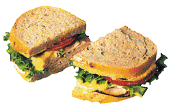

Reza a lenda que os deuses do Olimpo passavam por uma temporada das trevas, onde todas as criaturas sombrias com más intenções foram enviados por Hades, imperador dos mortos, rei do submundo, estava furioso e faminto, pois até mesmo o INFERNO passava por um período de escassez. Foi quando Zeus, o deus supremo de todos os deuses do Olimpo, encontrou a solução, seria o fim da fome no submundo. O SANDUÍCHE-ÍCHE!
Após a magnificência do sanduíche-íche ter surgido e o Olimpo estava na mais pura paz novamente, assim como o submundo, A evolução do sanduíche-íche passou por várias etapas até chegar nos dias atuais.Foram se adicionando mais ingredientes, vários tipos de pães eram inventados e muitos molhos eram explorados para dar um sabor peculiar ao sanduíche-íche.
Requer muito esforço preparar um bom sanduíche-íche, muita habilidade e muita paciência, apenas os mais sábios conseguem preparar o sanduíche-íche PERFEITO! Veja aqui como preparar um belo sanduíche-íche.
Clique aqui para voltar ao topo da página!